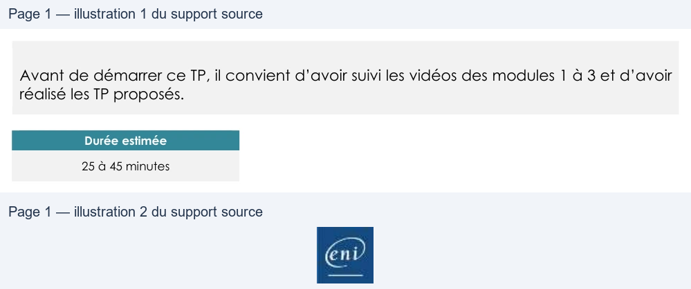

Transcription du document du Drive TSSR. La mise en forme est adaptée au Web ; les compléments IA du portail sont présentés séparément.
Administration Debian GNU/Linux
TP du Module 03 – Démarrage d’une distribution Debian
Avant de démarrer ce TP, il convient d’avoir suivi les vidéos des modules 1 à 3 et d’avoir
réalisé les TP proposés.
Durée estimée
25 à 45 minutes
I.
Gestion du service SSHD (connexions SSH)
Trouver les fichiers relatifs au fonctionnement du service (nom et emplacement) :
•
Fichier de configuration systemd du service
•
Démon ou fichier binaire du serveur ssh
•
Fichier de configuration du serveur sshd
II.
Gestion du service CRON (planification de tâches)
•
Le service sera-t-il lancé automatiquement au démarrage de la machine ?
•
Arrêter le service cron
•
Redémarrer le serveur. Le service cron est-il actif après redémarrage
•
Arrêter à nouveau le service manuellement
•
Désactiver totalement le démarrage automatique du démon cron au démarrage
du système.
Restaurer les paramètres par défaut de démarrage du démon cron
Une solution est proposée pour ce TP sous la forme d'un PDF commenté, disponible dans les
ressources à télécharger.
Page 1/1
© ENI – Tous droits réservés
BE
